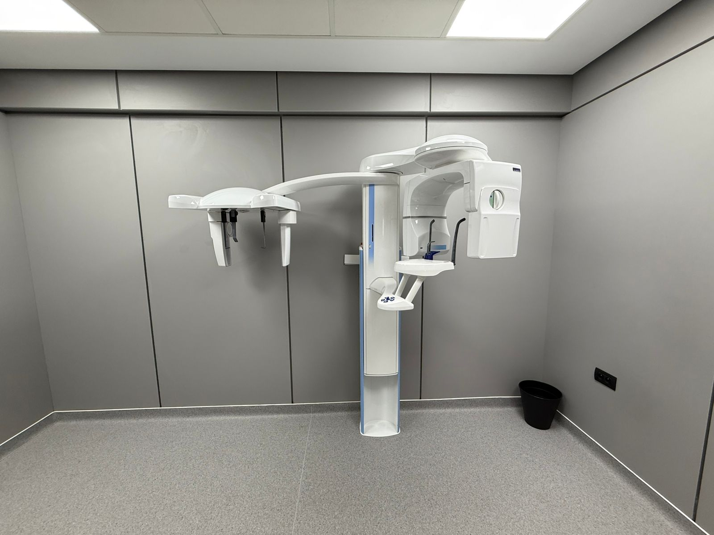

L’équipe médicale
Notre équipe est composée de 3 médecins spécialisés en imagerie médicale et fonctionnelle, et de 10 autres professionnels à votre service pour vous accompagner durant votre examen : manipulateurs radios et techniciens, infirmières et secrétaires médicales
Nos Examens
MISSION
Notre équipe médicale saura vous prendre en charge et vous guider durant toute la durée de vos examens de la manière la plus professionnelle et personnalisée qui soit.
Vos examens seront intégrés dans votre dossier numérique avec archivage à vie, possibilité de transmission par réseau et de comparaison ultérieure.
VISION
ATOUTS